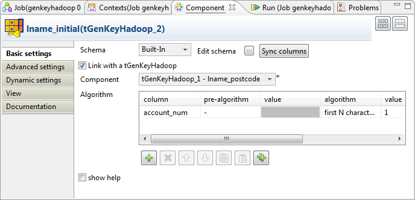
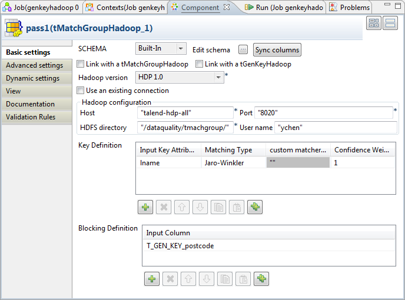
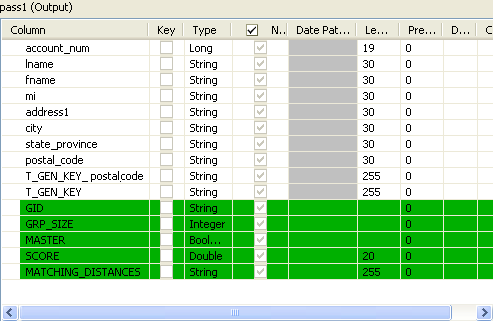

Avertissement
Ce composant est disponible dans la Palette du studio si vous avez souscrit à l'un des produits Talend Platform.
|
Famille de composant |
Data Quality | |
|
Fonction |
Le composant tMatchGroupHadoop utilise une (des) règle(s) de mise en correspondance afin de comparer des colonnes dans des données de HDFS et regroupe les doublons trouvés dans le flux de sortie. Lorsque plusieurs tMatchGroupHadoop sont utilisés de manière séquentielle, le premier crée les groupes d'enregistrements similaires et les suivants affinent les groupes reçus du composant précédent. Lors de la définition d'un groupe, le premier enregistrement traité devient l'enregistrement maître du groupe. Les autres enregistrements sont calculés selon leur distance par rapport à cet enregistrement maître et sont ensuite ajoutés au groupe de l'enregistrement maître. En affinant les groupes donnés, un groupe contenant un seul enregistrement (la taille du groupe est "1") est comparé aux autres enregistrements maître des autres groupes et est fusionné dans l'un des autres groupes, si la distance recalculée le permet. NoteSi vous avez plus d'un tMatchGroupHadoop dans votre Job, les distances et les scores de correspondance peuvent être incohérents lorsque le critère défini pour calculer est différent dans chaque composant. AvertissementS'il y a plusieurs composants tMatchGroupHadoop dans votre Job, le schéma doit être le même pour tous les tMatchGroupHadoop reliés dans le Job. | |
|
Objectif |
Ce composant vous permet d’assurer la qualité de vos données provenant de n’importe quelle source volumineuse. | |
|
Basic settings |
Schema et Edit schema |
Un schéma est une description de lignes, il définit le nombre de champs qui sont traités et passés au composant suivant. Le schéma est soit local (Built-in) soit distant dans le Repository. Cliquez sur Sync columns pour récupérer le schéma du composant précédent dans le Job. Le schéma de sortie de ce composant contient les champs suivants : GID : représente l’identifiant du groupe. GRP_SIZE : compte le nombre d’enregistrements dans le groupe, ce nombre est calculé uniquement sur l’enregistrement maître. MASTER : identifie l’enregistrement utilisé dans les comparaisons de correspondance. Il y a au moins un enregistrement maître par groupe. Chaque enregistrement d’entrée sera comparé à enregistrement maître. S’il y a correspondance, il sera dans le groupe. SCORE : mesure la distance entre l’enregistrement d’entrée et l’enregistrement maître selon l’algorithme de correspondance utilisé. Matching_Distances : présente la distance calculée d'un enregistrement par rapport à son enregistrement maître. |
|
|
| Built-in : Le schéma est créé et conservé ponctuellement pour ce composant seulement. Voir également le Guide utilisateur de Talend Data Integration Studio. |
|
|
| Repository : Le schéma existe déjà et est stocké dans le Repository. Ainsi, il peut être réutilisable dans divers projets et Job Designs. Voir également le Guide utilisateur de Talend Data Integration Studio. |
| Link with a tMatchGroupHadoop | Cochez cette case si plusieurs tMatchGroupHadoop sont utilisés dans le Job. Dans le champ Component, sélectionnez le tMatchGroupHadoop correspondant afin de réutiliser les informations de connexion à Hadoop précédemment définies. | |
| Link with a tGenKeyHadoop |
Cochez cette case si vous souhaitez réutiliser une connexion spécifique à un fichier HDFS, créée par un tGenKeyHadoop. | |
| Hadoop Version | Sélectionnez la version d'Hadoop que vous utilisez. | |
| Use an existing connection |
Cochez cette case et, dans la liste Component List, cliquez sur le composant HDFS de connexion duquel vous souhaitez réutiliser les informations de connexion précédemment définies. NoteLorsqu’un Job contient un Job parent et un Job enfant, la liste Component list présente uniquement les composants de connexion du Job du même niveau. | |
|
Hadoop configuration NoteIndisponible si vous utilisez un lien existant.
| Host | Saisissez l'adresse IP de votre serveur Hadoop. |
| Port | Saisissez le numéro du port d'écoute du serveur Hadoop. | |
| HDFS directory |
Saisissez le chemin d'accès au répertoire de HDFS dans lequel se trouvent les données à traiter. Lors de l'exécution, le composant nettoie les données dans le répertoire, s'il existe, y écrit les données d'entrée et effectue les opérations. Si vous souhaitez réutiliser les données existant dans HDFS, utilisez l'une des options suivantes :
| |
| User name |
Nom d'utilisateur de HDFS. | |
|
Key Definition |
Input Key Attribute |
Sélectionnez la (les) colonne(s) du flux d’entrée sur lequel vous souhaitez appliquer un algorithme de correspondance. NoteLorsque vous sélectionnez une colonne de dates sur laquelle appliquer un algorithme ou un algorithme de mise en correspondance, vous pouvez choisir ce que vous souhaitez comparer dans le format de date. Par exemple, si vous souhaitez comparer uniquement l'année, attribuez le type Date à la colonne concernée dans le schéma du composant puis saisissez "yyyy" dans le champ Date Pattern. Le composant convertit le format de date en une chaîne de caractères, selon le modèle défini dans le schéma, avant de comparer les chaînes de caractères. |
|
|
Matching Type |
Sélectionnez l’algorithme de correspondance dans la liste : Exact Match : associe chaque entrée traitée à toutes les entrées possibles de référence qui ont exactement la même valeur. Retourne 1 lorsque les deux chaînes de caractères, sinon, retourne 0. Exact - ignore case : fait correspondre chaque entrée traitée à toutes les entrées de référence possibles ayant les mêmes valeurs, en ignorant la valeur de la casse. Soundex : algorithme phonétique utile pour la comparaison de prénoms, selon la prononciation britannique. Indexe les chaînes de caractères par son, selon la prononciation anglaise. Par exemple "Hello" : "H400". Levenshtein (distance d'édition) : cette option calcule le nombre de modifications (insertions, suppressions ou substitutions) nécessaires à la transformation d'une chaîne de caractères en une autre. Lorsque vous utilisez cet algorithme dans le composant tMatchGroupHadoop, il n'est pas nécessaire de spécifier une distance maximale. Le composant calcule automatiquement un pourcentage de correspondance, basé sur la distance. Ce score de correspondance sera utilisé afin de calculer la correspondance globale, selon le score assigné dans le champ Confidence Weight. Metaphone : Cette option se base sur un algorithme phonétique afin d’indexer les entrées selon leur prononciation. Elle charge d’abord la phonétique de toutes les entrées du flux lookup de référence, puis vérifie toutes les entrées du flux principal par rapport aux entrées du flux de référence. Double Metaphone : nouvelle version de l’algorithme phonétique Métaphone, qui produit des résultats plus précis. Il peut retourner un code primaire et un code secondaire pour une chaîne de caractères. Cela est utile dans des cas ambigus, mais également pour de multiples variantes de noms de famille aux origines communes. Soundex FR : algorithme phonétique utile pour la comparaison de prénoms, selon la prononciation française. Jaro : fait correspondre les entrées traitées, selon les différences d'orthographe. Il compte le nombre de caractères correspondants entre deux chaînes de caractères. Plus la distance est grande, plus les chaînes sont semblables. Jaro-Winkler : variante de Jaro, donnant plus d'importance au début de la chaîne de caractères. q-grams : fait correspondre les entrées traitées en divisant les chaînes de caractères en blocs de lettres de longueur q, afin de créer un nombre de longueurs q-grammes. Le résultat de correspondance est donné comme le nombre de correspondances entre les q-grammes d’entrée et de référence, divisé par le nombre de q-grammes possibles. custom... : permet de charger un algorithme externe de mise en correspondance à partir d’une bibliothèque Java. La colonne Custom Matcher Class est activée lorsque vous sélectionnez cette option. Pour plus d'informations concernant le chargement d'une bibliothèque Java externe, consultez la section intitulée « tLibraryLoad ». Pour plus d’informations concernant la création d’un algorithme de correspondance personnalisé, consultez la section intitulée « Créer un algorithme de correspondance personnalisé ». Pour un scénario associé concernant l’utilisation d’un algorithme de correspondance personnalisé, consultez la section intitulée « Scénario 2 : Utiliser un algorithme de mise en correspondance personnalisé pour faire correspondre des entrées ». |
| Custom matcher class |
Saisissez le chemin d'accès à la classe personnalisée (algorithme externe de mise en correspondance) que vous souhaitez utiliser. Vous définissez vous-même ce chemin d'accès dans le fichier de votre bibliothèque (fichier .jar). Par exemple, pour utiliser une classe MyDistance.class stockée dans le répertoire org/talend/mydistance dans une bibliothèque personnalisée mydistance.jar, le chemin d'accès à saisir est org.talend.mydistance.MyDistance. | |
|
|
Confidence Weight |
Définissez un poids numérique pour chaque attribut (colonne) de la définition de clé. Les valeurs doivent être supérieures à 0. |
|
Blocking Definition |
Input Column |
Au besoin, sélectionnez la (les) colonne(s), comme clé(s) de bloc, du flux d’entrée selon laquelle (lesquelles) vous souhaitez partitionner les données traitées en blocs, ce qui est habituellement appelé “blocking”. La création de blocs (ou de groupes) réduit le nombre de paires d’enregistrements nécessitant examen. Lors de la création de blocs, les données d’entrée sont partitionnées en blocs exhaustifs créés pour augmenter la proportion de correspondances observées lors de la réduction du nombre de paires à comparer. Les comparaisons sont limitées aux paires d’enregistrements dans chaque bloc. NoteUtiliser des colonnes de bloc est très utile lorsque vous traitez des données très volumineuses. |
|
Advanced settings |
Matching Algorithm |
Sélectionnez un algorithme dans la liste. Simple VSR Matcher : Cet algorithme est basé sur une méthode de Modèle Vectoriel (Vector Space Retrieval) qui spécifie comment deux enregistrements peuvent correspondre. Match Interval : Saisissez la probabilité de correspondance. Deux enregistrements de données correspondent lorsque la probabilité est supérieure à la valeur définie. |
|
|
Sort the output data by GID |
Cochez cette case afin de regrouper les données de sortie par l’ID du groupe. |
|
|
Output distance details |
Cochez cette case pour remplir une colonne fixe de sortie MATCHING_DISTANCES donnant le détail de la distance entre chaque colonne. Cette case devient indisponible lorsque vous cochez la case Link with a tMatchGroupHadoop. |
|
Hadoop Properties NoteIndisponible si vous utilisez un lien existant. | Property |
Si vous devez utiliser la configuration personnalisée pour votre Hadoop, renseignez dans cette table la ou les propriété(s) à personnaliser. Lors de l'exécution, la ou les propriété(s) personnalisée(s) vont écraser celles définies précédemment pour Hadoop. Pour plus d'informations concernant les propriétés requises par Hadoop, consultez la documentation Hadoop. |
| Value |
Saisissez la valeur des propriétés personnalisées utilisées pour vous connecter à Hadoop. | |
| Keep data in Hadoop |
Cochez cette case pour conserver les données traitées par le composant dans le fichier HDFS. Si vous ne cochez pas cette case, le composant traite les données puis les récupère depuis le fichier HDFS et les écrit en sortie dans le flux du Job. | |
|
|
Use existing HDFS file |
Cochez cette case pour permettre au composant de traiter directement les données dans un fichier HDFS. Lorsque cette case est cochée, le composant est utilisable comme composant d'entrée dans votre Job. HDFS file URI : paramétrez les URIs du fichier HDFS contenant les données que vous souhaitez traiter. Field delimiter : définissez le caractère utilisé comme séparateur de champs dans le fichier HDFS. Si vous ne cochez pas cette case, le tMatchGroupHadoop reçoit le flux de données à traiter et le charge dans un fichier HDFS. |
|
|
tStatCatcher Statistics |
Cochez cette case pour collecter les métadonnées de process du Job, aussi bien au niveau du Job qu’au niveau de chaque composant. |
|
Dynamic settings |
Cliquez sur le bouton [+] pour ajouter une ligne à la table. Dans le champ Code, saisissez une variable de contexte afin de sélectionner dynamiquement votre connexion HDFS parmi celles prévues dans votre Job. La table Dynamic settings n'est disponible que si la case Use an existing connection est cochée dans la vue Basic settings. Lorsqu'un paramètre dynamique est configuré, la liste Component List devient inaccessible dans la vue Basic settings. Pour plus d'informations concernant les Dynamic settings et les variables de contexte, consultez le Guide utilisateur Talend Data Integration Studio. | |
|
Utilisation |
Ce composant peut être utilisé comme un composant de début ou intermédiaire. Il requiert un flux d’entrée comme étape intermédiaire et un flux de sortie pour tout type d'étape. Il requiert également une connexion à Hadoop afin de traiter un grand volume de données. Il est idéalement utilisé avec un composant tGenKey ou tGenKeyHadoop, afin d'utiliser les colonnes de bloc et optimiser les performances. En pratique, il est recommandé de configurer le premier tGenKey ou tGenKeyHadoop avec les critères de bloc les plus restrictifs. | |
Ce composant implémente l’algorithme MapReduce, selon les clés de blocs définies dans la table Blocking definition de la vue Basic settings.
Cette implémentation est la suivante :
Divise les lignes d'entrée en groupes d'une taille donnée.
Implémente une classe Map créant un mapping entre chaque clé et une liste d'enregistrements.
Mélange les enregistrements afin de regrouper ceux ayant la même clé.
Applique, sur chaque clé, l'algorithme défini dans la table Key definition de la vue Basic settings.
Ce composant lit les enregistrements, les compare aux enregistrements maître, regroupe les enregistrements similaires et classe les autres en tant qu'enregistrements maître.
Le composant écrit en sortie les groupes d'enregistrements similaires avec leur ID de groupe, la taille de leur groupe, les distances et les scores de correspondance.
Le Job de ce scénario se connecte à un système Hadoop donné et regroupe les enregistrements clients similaires en exécutant deux passes subséquentes dans HDFS, puis écrit en sortie les correspondances calculées par groupe. Chaque passe fournit ses correspondances à la passe qui suit, afin qu'elle ajoute des correspondances, identifiées à l'aide de nouvelles règles.
Les composants de ce Job sont les suivants :
un tFixedFlowInput : fournit les enregistrements client à traiter.
deux tGenKeyHadoop : définissent un moyen de partitionner les enregistrements.
deux tMatchGroupHadoop : traitent chaque partition pour y regrouper les enregistrements. Une fois configurés, ils trient les groupes selon l'ID de leur groupe. Le premier tMatchGroupHadoop traite les partitions définies par le premier tGenKeyHadoop et le second tMatchGroupHadoop traite celles définies par le second tGenKeyHadoop. Chaque tMatchGroupHadoop configure une passe pour mettre en correspondance les enregistrements reçus.
Avertissement
Les deux tMatchGroupHadoop doivent avoir le même schéma.
deux tLogRow : présentent les résultats d'exécution de chaque tMatchGroupHadoop.
Pour reproduire ce scénario, procédez comme dans les sections suivantes.
Déposez un tFixedFlowInput, deux tGenKeyHadoop, deux tMatchGroupHadoop et deux tLogRow de la Palette dans l'espace de modélisation graphique.
Note
Un composant utilisé dans l'espace de travail peut être nommé comme vous le souhaitez. Dans ce scénario, le tFixedFlowInput est nommé incoming_customers. Pour plus d'informations concernant le renommage d'un composant, consultez le Guide utilisateur de Talend Data Integration Studio.
Cliquez-droit sur le tFixedFlowInput pour ouvrir son menu contextuel et sélectionnez Row > Main afin de relier ce composant au premier tGenKey (nommé lname_postcode).
Répétez l'opération pour créer un lien Main entre le premier tGenKeyHadoop et le second tGenKeyHadoop (nommé lname_initial), puis vers le premier tMatchGroupHadoop, vers le premier tLogRow, vers le second tMatchGroupHadoop puis vers le second tLogRow.
Les composants du scénario sont tous placés et connectés. Vous pouvez les configurer.
Procédure 6.1. Configurer les données d'entrée
Double-cliquez sur le composant tFixedFlowInput pour ouvrir sa vue Component.

Cliquez sur le bouton [...] à côté du champ Edit schema pour ouvrir l'éditeur du schéma.

Cliquez huit fois sur le bouton [+] pour ajouter huit lignes. Ce sont les huit colonnes du schéma d'entrée.
Renommez ces lignes respectivement account_num, lname, fname, mi, address1, city, state_province et postal_code.
Dans la colonne Type, sélectionnez le type de données des colonnes qui vous intéressent. Dans cet exemple, sélectionnez Long pour la colonne account_num.
Cliquez sur OK pour valider ces modifications et acceptez la propagation proposée par la boîte de dialogue.
Dans la zone Mode de la vue Basic settings, sélectionnez Use Inline Content (delimited file) pour saisir les données d'entrée qui vous intéressent.
Dans le champ Content, saisissez les données d'entrée à traiter, ou collez les données d'exemple fournies par le Job de démo D4_hadoop_group_family_multipass que vous pouvez importer avec le projet Démo DQ. Pour plus d'informations concernant l'import d'un projet, consultez le Guide utilisateur de Talend Data Integration Studio.
Procédure 6.2. Configurer la génération de clé pour la première passe
Double-cliquez sur le premier tGenKeyHadoop (nommé lname_postcode) pour ouvrir la vue Component.

Configurez la connexion au HDFS dans lequel vous souhaitez écrire et traiter les enregistrements.
Les paramètres à configurer sont Hadoop version, Host, Port, HDFS directory et User name.
Dans le répertoire HDFS défini, ce composant va créer, lors de l'exécution, le dossier stockant séparément les enregistrements d'entrée, dans un dossier in et ces mêmes enregistrements, mais contenant leur clés de partitions, dans un dossier out. Les deux dossiers in et out se situent sous le même dossier père, tGenKeyHadoop_1.
Sous la table Algorithm, cliquez deux fois sur le bouton [+] pour ajouter deux lignes.
Dans la colonne column, cliquez sur la nouvelle ligne et sélectionnez dans la liste la colonne que vous souhaitez traiter à l'aide d'un algorithme. Dans cet exemple, sélectionnez lname.
Effectuez la même opération sur la seconde ligne afin de sélectionner postal_code.
Dans la colonne pre-algorithm, cliquez sur la nouvelle ligne et sélectionnez dans la liste l'algorithme que vous souhaitez appliquer à la colonne correspondante. Dans cet exemple, sélectionnez remove diacritical marks and upper case pour supprimer les marques diacritiques et changer les champs de la colonne lname en majuscules avant de générer le code de cette colonne.
Note
Cette conversion ne modifie pas vos données brutes.
Dans la colonne algorithm, cliquez sur la nouvelle ligne et sélectionnez dans la liste l'algorithme que vous souhaitez appliquer à la colonne correspondante. Dans cet exemple, sélectionnez N first characters of each word.
Répétez l'opération pour la seconde ligne, dans la colonne algorithm, sélectionnez first N characters of the string.
Cliquez dans la colonne Value à côté de la colonne algorithm et saisissez la valeur pour l'algorithme sélectionné, si nécessaire. Dans ce scénario, saisissez 1 pour les deux lignes, ce que signifie que la première lettre de chaque champ dans les colonnes correspondantes sera utilisé pour générer les clés.
Cliquez sur Advanced settings pour ouvrir la vue correspondante.

Cochez la case Keep data in Hadoop afin de traiter les données dans HDFS. Dans ce scénario, les enregistrements clients ne sont pas écrits dans le flux de sortie, le processus s'exécute plus rapidement.
Procédure 6.3. Configurer la génération de clé pour la seconde passe
Double-cliquez sur le second tGenKeyHadoop (nommé lname_initial) pour ouvrir sa vue Component.
Cochez la case Link with a tGenKeyHadoop afin de réutiliser la connexion à HDFS, ainsi que le répertoire HDFS créé par le premier tGenKeyHadoop. Cette réutilisation permet au composant de lire les données traitées par le tGenKeyHadoop précédent nativement dans HDFS.
Cliquez sur le bouton
 pour vérifier la colonne Key dans le schéma. La colonne Key des deux composants tGenKeyHadoop ont automatiquement été nommées différemment,
afin de pouvoir les différencier. Dans ce scénario, elles se nomment
T_GEN_Key_postcode et T_GEN_KEY.
pour vérifier la colonne Key dans le schéma. La colonne Key des deux composants tGenKeyHadoop ont automatiquement été nommées différemment,
afin de pouvoir les différencier. Dans ce scénario, elles se nomment
T_GEN_Key_postcode et T_GEN_KEY.
Sous la table Algorithm, cliquez sur le bouton [+] pour ajouter une ligne à la table.
Dans la colonne column, cliquez sur la nouvelle ligne et sélectionnez dans la liste la colonne que vous souhaitez traiter à l'aide d'un algorithme. Dans cet exemple, sélectionnez account_num.
Dans la colonne algorithm, cliquez sur la nouvelle ligne et sélectionnez dans la liste l'algorithme que vous souhaitez appliquer à la colonne correspondante. Dans cet exemple, sélectionnez first N characters of the string.
Cliquez dans la colonne Value à côté de la colonne algorithm et saisissez la valeur de l'algorithme sélectionné, si nécessaire. Dans ce scénario, saisissez 1, ce qui signifie que la première lettre de chaque champ de la colonne correspondante sera utilisé pour générer les clés requises.
Cliquez sur Advanced settings pour ouvrir la vue correspondante.
Cochez la case Keep data in Hadoop afin de traiter les données dans HDFS.
Vous devez configurer les deux passes afin de grouper les données d'entrée à l'aide des deux colonnes de clés générées.
Procédure 6.4. Configurer la première passe
Double-cliquez sur le premier tMatchGroupHadoop (nommé pass1) afin d'afficher sa vue Component.
Si nécessaire, cliquez sur le bouton Sync schema puis sur [...] à côté de Edit schema pour ouvrir l'éditeur de schéma et visualiser le schéma récupéré du composant précédent dans le Job.
Cochez la case Link with a tGenKeyHadoop afin de réutiliser la connexion à HDFS, ainsi que le répertoire HDFS créé par le premier tGenKeyHadoop. Cette réutilisation permet au composant de lire les données traitées par le tGenKeyHadoop précédent nativement dans HDFS.
Dans la table Key definition, cliquez sur le bouton
 pour ajouter à la liste les colonnes sur lesquelles
vous souhaitez effectuer l'opération de mise en correspondance, lname dans ce scénario.
pour ajouter à la liste les colonnes sur lesquelles
vous souhaitez effectuer l'opération de mise en correspondance, lname dans ce scénario.Note
Lorsque vous sélectionnez une colonne de dates sur laquelle appliquer un algorithme ou un algorithme de mise en correspondance, vous pouvez choisir ce que vous souhaitez comparer dans le format de date.
Par exemple, si vous souhaitez comparer uniquement l'année, attribuez le type Date à la colonne concernée dans le schéma du composant puis saisissez "yyyy" dans le champ Date Pattern. Le composant convertit le format de date en une chaîne de caractères, selon le modèle défini dans le schéma, avant de comparer les chaînes de caractères.
Cliquez sur la première et la deuxième cellules de la colonne Matching type et sélectionnez dans la liste la/les méthode(s) à utiliser pour l'opération de mise en correspondance, Jaro-Winkler dans cet exemple.
Cliquez sur le bouton [+] sous la table Blocking Definition pour ajouter une ligne puis cliquez dans cette ligne et sélectionnez dans la liste la colonne que vous souhaitez utiliser comme valeur de bloc, T_GEN_KEY_postcode dans cet exemple.
Utiliser une valeur de bloc réduit le nombre de paires d'enregistrements nécessitant examen. Les données d'entrée sont partitionnées en blocs exhaustifs basés sur une clé fonctionnelle. Cela réduit le nombre de paires à comparer, puisque la comparaison est restreinte aux paires d'enregistrements à l'intérieur d'un même bloc.
Cliquez sur Advanced settings afin d'ouvrir la vue correspondante et vérifier que la case Keep data in Hadoop est décochée. Ainsi, les enregistrements clients traités sont écrits dans le flux de sortie et sont alors disponibles pour le tLogRow.

Cochez la case Sort the output data by GID afin de trier les données selon l'ID de leur groupe.
Procédure 6.5. Configurer la seconde passe
Double-cliquez sur le second tMatchGroupHadoop (nommé pass2) pour afficher sa vue Component.

Si ce composant n'a pas le même schéma que le composant précédent, une icône d'avertissement apparaît. Dans cette situation, cliquez sur le bouton Sync columns afin de récupérer le schéma du composant précédent. Cela fait, l'avertissement disparaît.
Cochez la case Link with a tMatchGroupHadoop afin de réutiliser la connexion définie dans le tMatchGroupHadoop précédent, dans le système Hadoop.
Dans la table Key definition, cliquez sur le bouton
pour ajouter à la liste les colonnes sur lesquelles
vous souhaitez effectuer l'opération de mise en correspondance, lname dans ce scénario.Note
Lorsque vous sélectionnez une colonne de dates sur laquelle appliquer un algorithme ou un algorithme de mise en correspondance, vous pouvez choisir ce que vous souhaitez comparer dans le format de date.
Par exemple, si vous souhaitez comparer uniquement l'année, attribuez le type Date à la colonne concernée dans le schéma du composant puis saisissez "yyyy" dans le champ Date Pattern. Le composant convertit le format de date en une chaîne de caractères, selon le modèle défini dans le schéma, avant de comparer les chaînes de caractères.
Cliquez dans la cellule de la colonne Matching type et sélectionnez dans la liste la/les méthode(s) à utiliser pour l'opération de mise en correspondance, Jaro-Winkler dans cet exemple.
Cliquez sur le bouton [+] sous la table Blocking Definition pour ajouter une ligne puis cliquez dans cette ligne et sélectionnez dans la liste la colonne que vous souhaitez utiliser comme valeur de bloc, T_GEN_KEY dans cet exemple. Ainsi, l'opération de mise en correspondance est effectuée uniquement entre les enregistrements maître ayant la même clé, dans cet exemple, le même caractère initial des numéros de compte.
Avec cette passe, ce Job traite les groupe de correspondance fournis par le tMatchGroupHadoop précédent. Il sélectionne les groupes avec un seul enregistrement à comparer avec les autres enregistrements maître lorsqu'ils ont la même clé générée.
Cliquez sur Advanced settings afin d'ouvrir la vue correspondante et vérifier que la case Keep data in Hadoop est décochée. Ainsi, les enregistrements clients traités sont écrits dans le flux de sortie et sont alors disponibles pour le tLogRow.
Cochez la case Sort the output data by GID afin de trier les données selon l'ID de leur groupe.
Procédure 6.6. Trier les enregistrements d'entrée
Double-cliquez sur le composant tSortRow pour ouvrir sa vue Component.

Sous la table Criteria, cliquez deux fois sur le bouton [+] pour ajouter deux lignes.
Dans la première ligne, sélectionnez GID pour la colonne Schema column, alpha pour la colonne Sort num or alpha et asc pour la colonne Order asc or desc. Cela signifie que le tri s'effectue sur la colonne GID du schéma d'entrée, dans un ordre alphabétique ascendant. Les autres colonnes sont triées selon leur colonne GID.
Répétez l'opération pour sélectionner GRP_SIZE, num et desc pour la second ligne.
Vous pouvez exécuter ce Job.
Le composant tLogRow est utilisé pour présenter les résultats d'exécution du Job.
Si vous souhaitez configurer le mode de présentation dans la vue Component, double-cliquez sur le tLogRow qui vous intéresse et, dans la zone Mode, sélectionnez l'option Table (print values in cells of a table).
Appuyez sur F6 pour exécuter le Job.
Une fois exécuté, la vue Run s'ouvre automatiquement et vous pouvez visualiser les résultats d'exécution.
Le résultat après la première passe est le suivant :

Le résultat après la seconde passe se présente comme suit :

Note
Pour des raisons de place sur la page, les résultats ne sont pas présentés en entier.
Lorsque vous comparez, par exemple, le nom du client Alexander dans les résultats des deux passes, vous pouvez voir qu'il y a plus de clients dont le nom de famille est Alexander regroupés après la seconde passe :
Durant la première passe, Jeremy Alexander, Bob Alexander et Maxine Alexander ne sont pas distribués dans le même groupe car l'opération de mise en correspondance est effectuée uniquement sur chaque bloc défini dans la colonne T_GEN_KEY_postcode, alors qu'ils appartiennent à des blocs différents, respectivement, A9, A8 et A3.
Durant la seconde passe, la mise en correspondance effectuée utilise les blocs définis dans la colonne T_GEN_KEY. Comme le nom de ces trois clients appartient au bloc 2, ils sont regroupés après calcul de la distance les séparant. Vous pouvez également lire, dans la colonne MASTER, que Jeremy Alexander est l'enregistrement maître de son groupe.